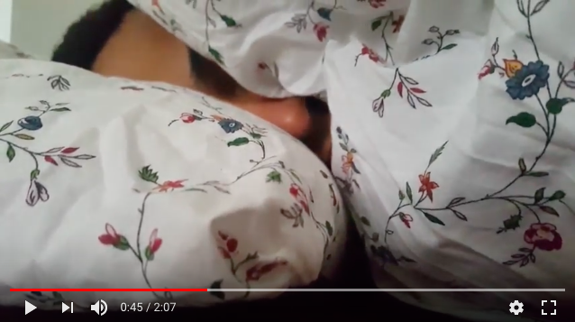

A story without words
What?
Create a short video and tell a story without using any words. We were given a theme and had to come up with a short story. We chose "difficult liasons" and tried to interpret this theme in a authentic and funny way, which was associated with our personal experiences.
Here you can find all of our hand-ins:
Tell a story without wordsMy role?
Ideation, video editing, sound editing.
Skills gained
Coming up with a short story in one day
Considering various perspectives and settings when filming